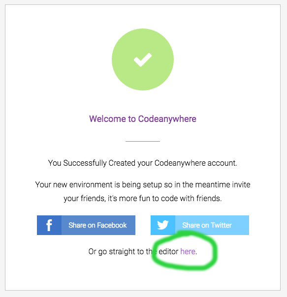
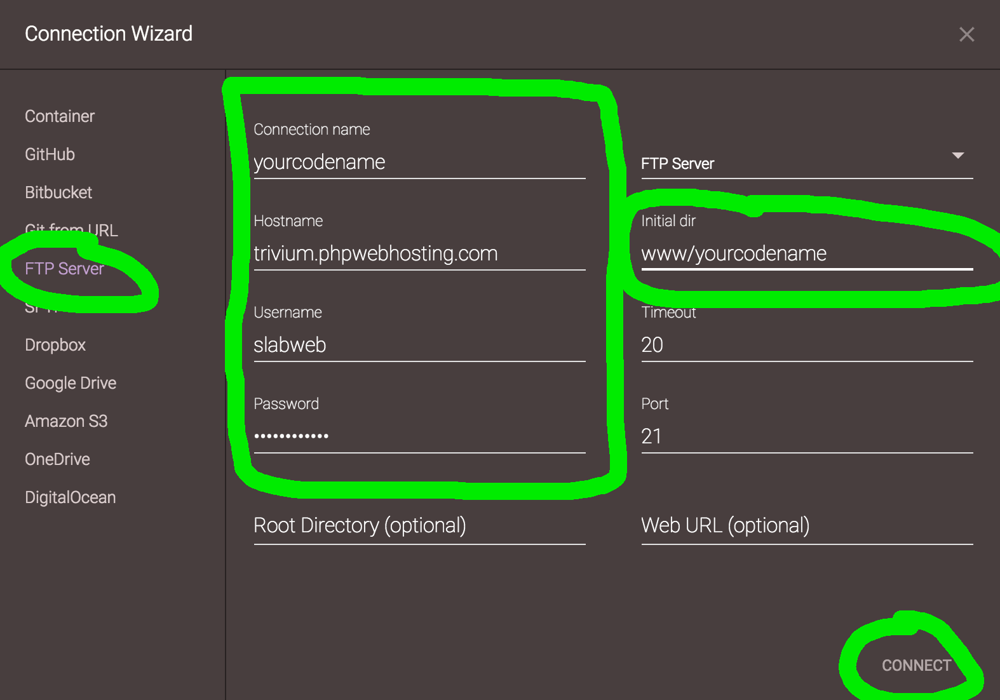
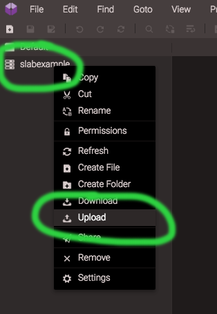
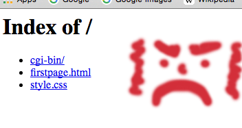

How to Set Up CodeAnywhere
I. Setting up FTP
- Go to CodeAnywhere.com and click the button labelled 'Sign up for Free'.
- Fill in your e-mail address, choose a password, and try to prove you're human.
- If you've convinced them that you're human, you should see the page below. Click the link to the editor, the one that says, 'here'. 
- The connection wizard should be the next screen you see. You want to connect to your server using File Transfer Protocol, so click "FTP" in the left-hand column.
- For connection name, use your codename, all lowercase with no spaces.
- For hostname, type "trivium.phpwebhosting.com"
- For username, put in "slabweb" or "slabweb17", whichever you've been assigned.
- The password is not the password for CodeAnywhere or your e-mail. Use the class password written on the board.
- For 'Initial dir', put in "www/yourcodename", where 'yourcodename' is replaced with your actual codename.
- Doublecheck that it looks generally like the image below and then click 'Connect'. 
II. Put your page on the Web
- Right-click on the connection (it will be labelled with your codename). 
- Click on upload. Drag your files into the box that appears.
- Right-click on your firstpage.html and select 'Rename'. Rename the file to "index.html" .
- Go to your website ( eg. "slabweb17.phpwebhosting.com/yourcodename" ) and check that the files are in place. If you did not rename your firstpage to "index.html", you may see a page like the one below. Please fix this. 
- You can also use the Project Checker to verify that your page is in the right place.